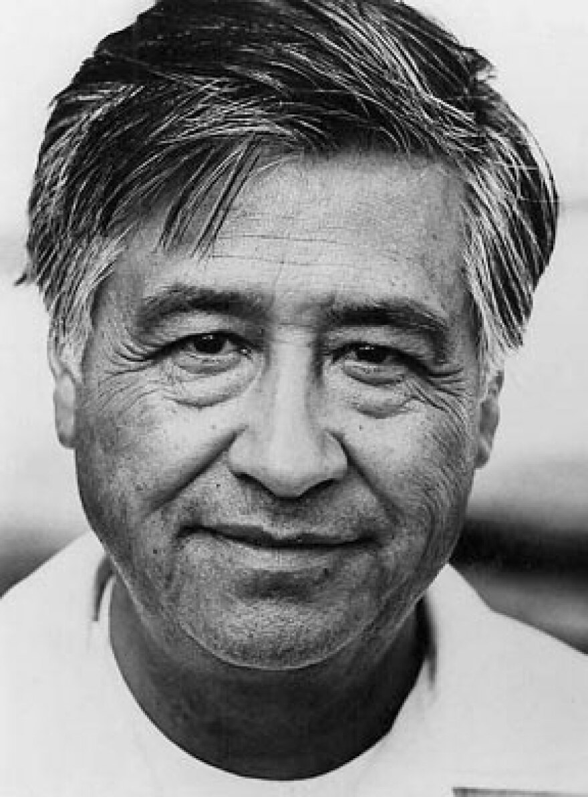
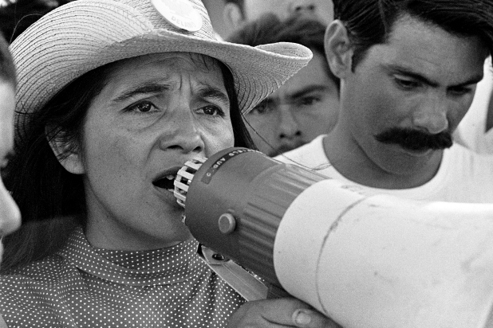
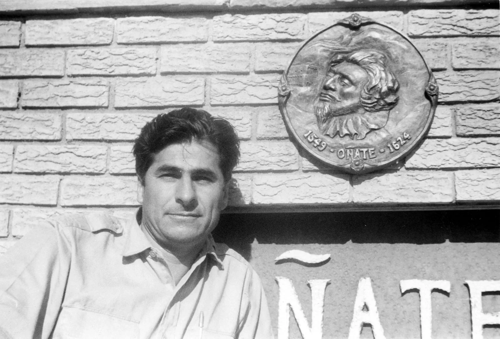
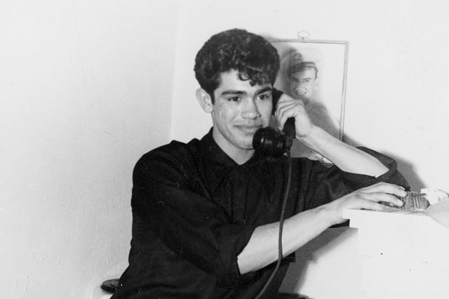

Who they were
Overview of the Movement
A social and political campaign in which Mexican Americans organized across the Southwest to demand equal rights, dignity, and a place in American political life.
The Chicano Movement, also known as El Movimiento, was a powerful social and political campaign during the 1960s and 1970s in the United States. Mexican Americans fought against intense discrimination, demanding equal rights, better education, and fair working conditions. A major spark for the movement came from farmworkers in California, led by activists like Cesar Chavez and Dolores Huerta, who organized strikes and boycotts to protest the terrible treatment and low pay of laborers (Library of Congress). At the same time, young activists and students walked out of high schools to protest unequal schooling, while others fought to reclaim land that had been wrongfully taken from Mexican families generations earlier. Ultimately, the movement was about demanding dignity and forcing the United States to recognize the basic civil rights of Mexican Americans.
To understand the movement, it helps to understand who "Chicanos" actually are. Originally, the word "Chicano" was a negative slur used against Mexican Americans living in the U.S. However, during the 1960s, Mexican American youth proudly reclaimed the term as a symbol of cultural pride and defiance (National Park Service). Being Chicano meant embracing a unique identity that was neither fully Mexican nor fully American, but a distinct blend of both, heavily rooted in Indigenous heritage. By adopting this name, the group united people across the Southwest and beyond, transforming a diverse population into an organized community ready to fight for political power and cultural respect.
What they wanted
Goals of the Movement
The chicano movement demanded equal rights and education,fair labor practices as well as political represenation to eliminate systematic discrimation of the Mexican American people
Labor reform
The Movement demanded that there be fair wages,safer working conditions and legal union recongition of migrant farmers to end severe economic exploiation.
Educational equity
The movement fought for equal funding,bilingual education and Chicano studies to replace a discriminatory school system that neglected hispanic youth
Political empowerment and land rights
The movement worked to increase voter regristration and elect mexican american officials and reclaim ancestral lands to gain a voice in the government
"All my life, I have been driven by one dream, one goal, one vision: to overthrow a farm labor system in this nation that treats farm workers as if they were not important human beings. Farm workers are not agricultural implements; they are not beasts of burden to be used and discarded"
Why it matters: This matters because it shows that the movement is trying to dismantle the entire system that is suppressing Mexican American rights and viewing the workers as disposable labor
Who led it
Key Leaders
The Chicano Movement was shaped by a generation of organizers, farm workers, and activists who built coalitions across labor, education, and civil rights to demand dignity and justice for Mexican Americans.

César Chávez
Co-founder, United Farm Workers (UFW)
César Chávez was the most nationally recognized figure of the Chicano Movement, dedicating his life to organizing agricultural workers across California and the Southwest. In 1962, he co-founded what would become the United Farm Workers union alongside Dolores Huerta. He led the historic Delano Grape Strike beginning in 1965, using nonviolent tactics — including hunger strikes and a 340-mile march to Sacramento — to win labor contracts for thousands of farmworkers.

Dolores Huerta
Co-founder, United Farm Workers; labor and civil rights organizer
Dolores Huerta co-founded the United Farm Workers with César Chávez and was one of the most effective labor organizers in American history. She negotiated contracts, lobbied in Washington, and coined the rallying cry "Sí, se puede" — "Yes, we can." Despite facing significant personal risk and sexism within the movement, Huerta remained central to organizing campaigns for decades and continues to advocate for farmworkers and immigrants today.

Reies López Tijerina
Founder, Alianza Federal de Mercedes; land rights activist
Reies López Tijerina led the New Mexico-based Alianza Federal de Mercedes, which fought to reclaim land grants promised to Mexican and Indigenous communities under the Treaty of Guadalupe Hidalgo. In 1967, he led the Tierra Amarilla courthouse raid, a dramatic confrontation that brought national attention to the land rights struggle. Tijerina's movement connected Chicano identity to historical claims of sovereignty and is seen as one of the four major pillars of the broader Chicano Movement.

Rodolfo "Corky" Gonzales
Founder, Crusade for Justice; poet and political organizer
Rodolfo "Corky" Gonzales founded the Crusade for Justice in Denver in 1966, a community organization that advanced Chicano nationalism and cultural pride. He organized the National Chicano Youth Liberation Conference in 1969, where youth activists drafted "El Plan Espiritual de Aztlán," a foundational document of the movement calling for Chicano self-determination. Gonzales also authored the epic poem I Am Joaquín, which gave powerful voice to Chicano identity and became one of the most widely read works of the era.
"[Paste a quote from one of these leaders — from a speech, letter, or interview.]"
Why it matters: [Explain the source: what it is, who said/wrote it, and what it reveals about the leader or the movement.]
What happened
Key Events
The Chicano Movement, or El Movimiento, leveraged civil disobedience, student walkouts, and labor strikes to fiercely contest systemic racism and demand civil rights for Mexican Americans.
The Founding of the NFWA
In September 1962, César Chávez, Dolores Huerta, and Gilbert Padilla organized the first convention of the National Farm Workers Association (NFWA) in Fresno, California. This marked the official birth of the organized Chicano labor movement. By establishing a union built on community organizing and nonviolent principles, they laid the essential groundwork for the massive Delano Grape Strike that would follow three years later.
The Delano Grape Strikes
In September 1965, Filipino farmworkers went on strike in California, and César Chávez and Dolores Huerta led the Mexican American National Farm Workers Association (NFWA) to join them. This powerful coalition organized a national consumer boycott of non-union table grapes to draw attention to exploitation. It successfully forced growers to sign historic union contracts, establishing the United Farm Workers (UFW) and demonstrating the economic power of labor organizing.
The Tierra Amarilla Courthouse Raid
In June 1967, Reies López Tijerina led an armed raid on the courthouse in Tierra Amarilla, New Mexico, on behalf of La Alianza Federal de Mercedes (Federal Alliance of Land Grants). The movement sought to reclaim ancestral lands guaranteed to Mexican Americans under the 1848 Treaty of Guadalupe Hidalgo but seized by the US government. This dramatic confrontation electrified the movement, introducing a more militant struggle for land and cultural sovereignty.
The East Los Angeles High School Walkouts
In March 1968, over 10,000 Mexican American students peacefully walked out of Lincoln, Garfield, and Roosevelt High Schools in East L.A. Organizers like teacher Sal Castro helped students protest rundown facilities, high dropout rates, and a complete lack of Mexican American history in their curriculum. The "Blowouts" catalyzed a nationwide Chicano student movement, forcing school boards to acknowledge the institutional neglect of Latino youth.
The National Chicano Youth Liberation Conference
In March 1969, Rodolfo "Corky" Gonzales and the Crusade for Justice hosted a massive youth conference in Denver, Colorado, drawing over 1,500 activists. Participants debated identity, political strategy, and community self-determination, culminating in the drafting of El Plan Espiritual de Aztlán. This historic document rejected assimilation and officially adopted "Chicano" as a proud term of cultural nationalism and political unity.
The Chicano Moratorium
On August 29, 1970, over 20,000 Mexican Americans marched through East Los Angeles to protest the disproportionately high casualty rates of Chicano soldiers in the Vietnam War. Though the demonstration began completely peacefully, an aggressive police response escalated into violent clashes at Laguna Park, resulting in hundreds of arrests. This event marked a tragic turning point that heightened national political awareness around civil rights and state violence.
The Founding of the La Raza Unida Party
Dissatisfied with both major political parties, activists led by José Ángel Gutiérrez held their first national convention in 1972 to formally launch La Raza Unida (The United People's Party). The third-party movement sought to gain political self-determination by registering Chicano voters and running Mexican American candidates for local offices across the Southwest. It successfully won mayoral and school board seats in South Texas, proving that the community could build independent electoral power.
Key Educational and Legal Triumphs
By 1973, the momentum of student walkouts culminated in major systemic victories. Activists and legal teams successfully pushed for the expansion of Chicano Studies programs across Southwest universities, and the Mexican American Legal Defense and Educational Fund (MALDEF) secured landmark court rulings against discriminatory school funding. This period cemented the institutional shifts that guaranteed bilingual education and equitable resources for Mexican American youth.
""We are Mexican and American. We are Chicanos because we utilize the word to accept our manhood and to defend our dignity... We must organize ourselves to build our own institutions, to control our own education, and to choose our own leaders.""
Why it matters: This excerpt from El Plan Espiritual de Aztlán (1969), drafted at the Denver Youth Conference, serves as a foundational manifesto of Chicano cultural nationalism. It shows that the movement was not just about changing laws, but about reclaiming cultural identity, rejecting forced assimilation into Anglo-American culture, and demanding community self-determination.
"By virtue of the Treaty of Guadalupe Hidalgo, the government of the United States promised to respect and protect our property, our language, and our culture. That promise was broken. We are not violating the law by demanding our land back; we are asking the law to fulfill its own word."
Why it matters: This declaration by Reies López Tijerina highlights the legal and historical basis of the Chicano land grant movement. It demonstrates that activists weren't just fighting for contemporary civil rights, but were actively pulling from international treaties to challenge decades of economic exploitation and territorial theft by the state.
Our research
Bibliography
All sources used to build this site, in MLA format.
- [MLA citation #1 — e.g. Author Last, First. "Title." Website/Publisher, Date, URL.]
- .
- [MLA citation #3]
- Chavez, Cesar. "Address to the Commonwealth Club of California." 9 Nov. 1984, San Francisco, CA. Farmworker Movement Documentation Project, UC San Diego Library, https://libraries.ucsd.edu/farmworkermovement/essays/essays/CESAR%20CHAVEZ%20COMMONWEALTH%20SPEECH.pdf Primary
- [MLA citation #5 — primary source] Primary